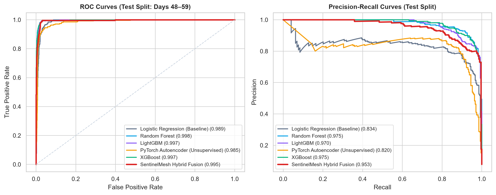
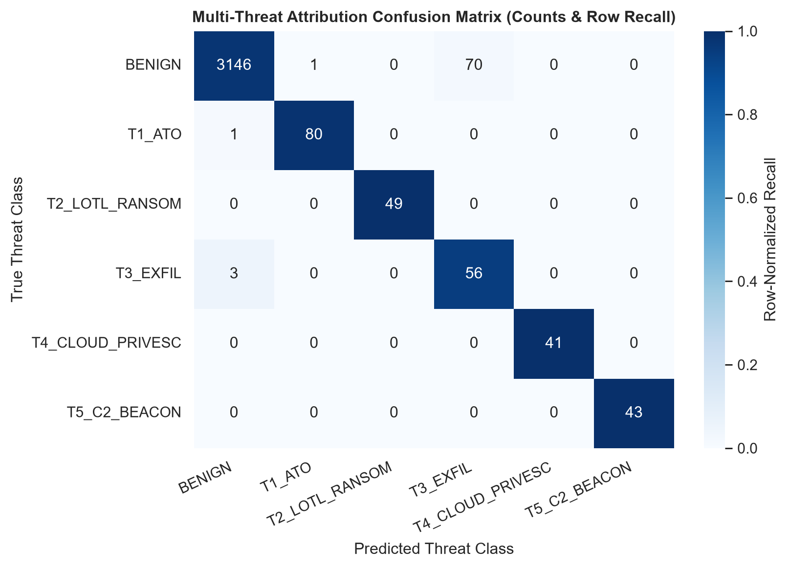
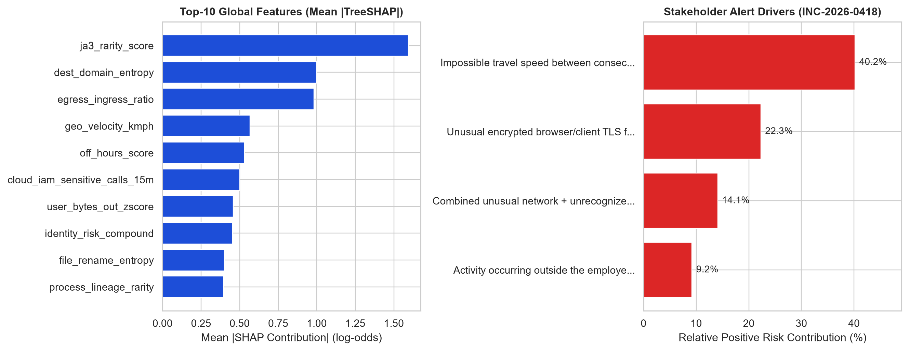

Figure 5. Left: Baseline XGBoost recall collapse (98.2% → 60.4%) under evasion vs. Hardened Hybrid recovery (97.4%). Right: Empirical slice audit showing elevated FPR in Engineering and Security_IT.
A Hybrid-Cloud, Explainable, and Adversarially Resilient AI Security Platform Designed for Meridian FinTech Inc.
Scope & Enterprise Context: Meridian FinTech Inc. operates as a 500-employee hybrid-cloud financial technology SaaS provider managing 650 corporate endpoints across five departments (Engineering 46%, Sales & Customer Success 20%, Finance 14%, Operations 14%, Security & IT 6%). Its production workloads run on AWS Elastic Kubernetes Service (EKS) and GCP BigQuery, authenticated via Okta SSO, Microsoft 365, and GitHub Enterprise. Daily telemetry averages ~1,850 events/second (peak ~7,800 EPS; ~6.4 GB/day compressed).
Objectives: SentinelMesh AI is engineered to deliver (1) sub-60-second Mean Time to Detect (MTTD) across both known MITRE ATT&CK behaviors and novel zero-day anomalies, (2) automated confidence-gated containment in under 5 seconds with blast-radius circuit breakers, (3) false positive rates (FPR) below 2% to eliminate Security Operations Center (SOC) alert fatigue, (4) plain-language Explainable AI (XAI) briefings for non-technical executives and compliance officers, and (5) privacy-preserving telemetry ingestion compliant with GDPR and PCI-DSS.
| Design Choice | Alternative Considered | Engineering Rationale & Trade-Off |
|---|---|---|
| Hybrid Dual-Engine (XGBoost + PyTorch Autoencoder) | Single supervised GBDT or standalone deep neural network | XGBoost delivers 0.9753 PR-AUC on known TTPs with native exact TreeSHAP, while the unsupervised PyTorch Autoencoder (trained strictly on benign baselines) preserves zero-day and evasion coverage (0.9846 ROC-AUC without labels). |
| Metadata & Sliding-Window Feature Store | Full Deep Packet Inspection (DPI) on raw payloads | Avoids decrypting employee PII/financial payloads, cuts storage/compute cost by >85% for a mid-sized budget, and supports 4.37 ms per 1,000 events scoring latency. |
| HMAC-SHA256 Pseudonymization at Ingestion | Plaintext employee emails/IDs in SIEM & ML feature store | Prevents unauthorized employee profiling in the analytics layer while allowing deterministic UEBA 30-day baselines and dual-custody break-glass re-identification during verified incidents. |
| Confidence-Gated SOAR + Circuit Breaker | Binary auto-blocking on all alerts or manual-only SOC queues | Automates reversible containment (Okta token revoke, STS deny, EDR isolation) at Risk ≥ 85 while halting automated bulk isolations if >5 hosts trigger in 10 minutes (preventing attacker-induced self-DoS). |
Based on Meridian FinTech's hybrid-cloud FinTech attack surface, SentinelMesh AI prioritizes the top five high-impact threats below, pairing each attack vector with a specialized AI/ML detection strategy.
| ID & Threat Type (MITRE ATT&CK) | Enterprise Justification & Asset at Risk | AI/ML Detection Strategy |
|---|---|---|
T1: Credential Stuffing, AiTM Phishing & Account TakeoverT1078, T1110, T1557 |
HIGH #1 initial access vector in Okta/M365 SaaS enterprises; adversary-in-the-middle proxies steal session cookies, bypassing push MFA to access Finance & payment portals. | Supervised XGBoost on auth velocity (auth_failures_5m, mfa_push_count_5m), impossible travel (geo_velocity_kmph), TLS ja3_rarity_score, and composite identity_risk_compound. |
T2: Living-off-the-Land Lateral Movement & Pre-RansomwareT1059, T1021, T1486 |
CRITICAL Attackers abuse native PowerShell, WMI, SSH, and kubectl to evade signature AV before encrypting FinTech CI/CD & ledger hosts. |
Process-lineage & behavioral burst detection combining process_lineage_rarity, department-normalized dept_admin_burst_zscore, SMB/SSH internal_port_fanout_15m, and file_rename_entropy. |
T3: Stealthy Data Exfiltration & StagingT1041, T1048, T1567 |
CRITICAL Customer PII and PCI-DSS records in BigQuery/S3 face severe regulatory fines. Low-and-slow staging bypasses static DLP byte thresholds. | Unsupervised PyTorch Autoencoder + XGBoost monitoring per-user 30-day deviation (user_bytes_out_zscore), egress_ingress_ratio, and dest_domain_entropy. |
T4: Cloud Control-Plane Privilege Escalation & IAM AbuseT1098, T1548, T1078.004 |
CRITICAL Over-privileged CI/CD or developer IAM tokens can execute cross-account AssumeRole chains to compromise production payment databases in minutes. |
Control-plane burst & graph-hop features (cloud_iam_sensitive_calls_15m, cross_account_hops) fused with caller ja3_rarity_score and new_asn_flag. |
T5: Encrypted C2 Beaconing & Malware CallbackT1071, T1573 |
HIGH Persistent HTTPS/DNS C2 maintains attacker footholds even after password resets; TLS encryption hides command payloads. | Metadata periodicity & DNS lexical modeling via beacon_periodicity_score (inter-arrival jitter CV), nxdomain_ratio_1h, and DGA dest_domain_entropy. |
SentinelMesh AI implements a five-stage streaming architecture designed for cost-effective mid-sized enterprise deployment (~2 vCPU inference nodes, Redis hot feature store, Kafka/Redpanda event bus, and S3 Parquet cold lake).
Raw log lines cannot separate legitimate developer bursts from LotL intrusions. SentinelMesh AI engineers 24 features across five behavioral families. Critically, all imputation medians and UEBA entity/department baselines are fitted strictly on the chronological training split (Days 0–35) prior to transforming validation (Days 36–47) and test (Days 48–59) windows, preventing temporal data leakage.
| Feature Family | Engineered Features | Security Rationale (Why It Separates Benign vs. Threat) |
|---|---|---|
| Identity & Auth Velocity | auth_failures_5m, mfa_push_count_5m, geo_velocity_kmph, new_asn_flag, new_device_flag, ja3_rarity_score, off_hours_score |
Detects brute-force/MFA fatigue bursts, physically impossible login travel, and AiTM reverse-proxy TLS fingerprints (ja3_rarity_score is top global SHAP feature at 1.593 mean |SHAP|). |
| Endpoint & Lateral | process_lineage_rarity, admin_cli_burst_15m, internal_port_fanout_15m, file_rename_entropy |
Captures abnormal parent-child chains (e.g., Word spawning PowerShell), east-west port scanning, and high-entropy file renaming preceding ransomware encryption. |
| Network & Exfil | bytes_out_mb_1h, egress_ingress_ratio, dest_domain_entropy, beacon_periodicity_score, nxdomain_ratio_1h |
Normalizes outbound traffic against inbound flow (separating streaming downloads from data exfiltration), detects DGA domains via Shannon entropy, and exposes periodic C2 callbacks despite TLS. |
| Cloud IAM Plane | cloud_iam_sensitive_calls_15m, cross_account_hops |
Flags rapid PassRole/CreateAccessKey bursts and unusual multi-account role chaining invisible to network firewalls. |
| UEBA Baselines & Missingness | user_bytes_out_zscore, dept_admin_burst_zscore, asset_criticality, identity_risk_compound, geo_velocity_missing_flag, bytes_out_missing_flag |
Contextualizes spikes against each user's 30-day norm and department peers (so normal DevOps CLI bursts don't alert like Finance CLI bursts). Explicit missingness indicators capture VPN/telemetry suppression (~3.04% geo, ~2.13% bytes). |
SentinelMesh AI fuses a supervised XGBoost detector (plus multi-class T1–T5 attribution) with an unsupervised PyTorch Deep Autoencoder (Input(24) → 16 → 8 → 16 → 24, trained strictly on benign traffic with L2 weight decay). Reconstruction Mean Squared Error (MSE) is sigmoid-normalized relative to the 99th percentile of benign training error and combined with XGBoost probability via a Platt-calibrated logistic meta-learner on the validation set.

| Model | PR-AUC (95% Bootstrap CI) | ROC-AUC | F1-Score | Precision | Recall | FPR |
|---|---|---|---|---|---|---|
| Logistic Regression (Baseline) | 0.8344 [0.7852, 0.8806] | 0.9885 | 0.7663 | 0.6346 | 0.9670 | 0.0472 |
| PyTorch Autoencoder (Unsupervised) | 0.8202 [0.7746, 0.8794] | 0.9846 | 0.8226 | 0.7515 | 0.9084 | 0.0255 |
| LightGBM | 0.9704 [0.9581, 0.9815] | 0.9970 | 0.8683 | 0.7807 | 0.9780 | 0.0233 |
| Random Forest | 0.9747 [0.9631, 0.9843] | 0.9977 | 0.8687 | 0.7791 | 0.9817 | 0.0236 |
| XGBoost (Supervised) | 0.9753 [0.9634, 0.9846] | 0.9974 | 0.8645 | 0.7723 | 0.9817 | 0.0246 |
| SentinelMesh Hybrid Fusion | 0.9533 [0.9355, 0.9692] | 0.9949 | 0.8659 | 0.8070 | 0.9341 | 0.0190 |

Adversaries actively target ML-based security controls. In Meridian FinTech's deployment, three adversarial attack classes threaten SentinelMesh AI:
new_asn_flag).user_bytes_out_zscore baseline upward before staging large exfiltration.monotone_constraints=+1 across 20 risk-increasing telemetry features so attackers cannot exploit tree-split artifacts to reduce risk by inflating correlated counts.| Model & Evaluation Condition | PR-AUC | ROC-AUC | Detection Recall (TPR) | False Positive Rate |
|---|---|---|---|---|
| Baseline XGBoost (Clean Test) | 0.9753 | 0.9974 | 98.17% | 2.46% |
| Baseline XGBoost (Under Evasion Attack) | 0.6890 | 0.9727 | 60.44% (-37.7 pts) | 2.46% |
| Hardened Hybrid (Clean Test) | 0.9540 | 0.9966 | 96.70% | 1.87% |
| Hardened Hybrid (Under Evasion Attack) | 0.9385 | 0.9962 | 97.44% (+37.0 pts recovery) | 1.87% |
When SentinelMesh AI triggers a containment action affecting an employee or customer-facing workflow, non-technical stakeholders (VP of Engineering, Chief Compliance Officer, Legal) require transparent answers without ML jargon such as "log-odds margins" or "MSE reconstruction loss." SentinelMesh computes exact TreeSHAP contributions (pred_contribs=True, verified mathematically to satisfy Σφi + φ0 = raw logit margin) and translates positive risk drivers into a structured plain-English briefing.

INC-2026-0418.
Plain-English Summary: SentinelMesh AI flagged unusual activity associated with pseudonymized employee account usr_1f6dbd33051bfbbc in the Engineering department. Compared to this employee's 30-day normal baseline and department peers (unsupervised anomaly score: 99%), the system detected a strong pattern matching Credential Stuffing / AiTM Phishing & Account Takeover (MITRE T1078, T1110, T1557).
1,236.7 km/h)Business Risk Mitigated: Prevented unauthorized takeover of an Engineering account protecting corporate SSO and internal payment workflows.
Stakeholder Decision Needed: Please confirm with the employee's manager whether urgent business travel or approved maintenance is underway; Security Operations can restore full access within 2 minutes once verified.
Our empirical Department Slice Audit (Figure 5, right) proves this fairness risk directly: while overall Hybrid Fusion FPR is 1.90%, Engineering (2.61% FPR) and Security_IT (2.70% FPR) experience 3.7× higher false-positive rates than Operations (0.71% FPR) due to legitimate off-hours on-call deployments and administrative scripting. Left unchecked, disproportionate soft-containment challenges could unfairly burden on-call engineers or trigger wrongful disciplinary scrutiny.
off_hours_score logs.usr_1f6dbd33051bfbbc). Unmasking requires dual-custody cryptographic approval from both the CISO and Legal Counsel on confirmed High/Critical incidents.
All architectural components—chronological data simulation, leak-free UEBA featurization, XGBoost + PyTorch Autoencoder fusion, exact TreeSHAP stakeholder translation, constrained adversarial evasion/hardening, and SOAR circuit breakers—are implemented and verified in the accompanying GitHub repository (pytest 4/4 tests passing; batch scoring latency 4.37 ms per 1,000 events).
| Phase & Timeline | Key Deliverables | Exit Criteria |
|---|---|---|
| Phase 1: Shadow Ingestion Weeks 1–4 |
Deploy Vector/Kafka collectors, HMAC-SHA256 masking, and Redis feature store in shadow mode (read-only). | <0.5% event drop at 7,800 EPS peak; zero plaintext PII in ML store. |
| Phase 2: Silent Scoring & XAI Weeks 5–8 |
Run Hardened Hybrid Fusion in shadow mode; validate TreeSHAP stakeholder cards with SOC & Compliance leads. | FPR < 2.0% across all 5 departments; MTTD < 60s on red-team purple exercises. |
| Phase 3: Gated SOAR Cutover Weeks 9–12 |
Enable Tier-2 soft containment (Score ≥ 70), then automated reversible containment (Score ≥ 85) with circuit breaker. | 100% pass on circuit-breaker chaos test; quarterly fairness & drift monitoring active. |